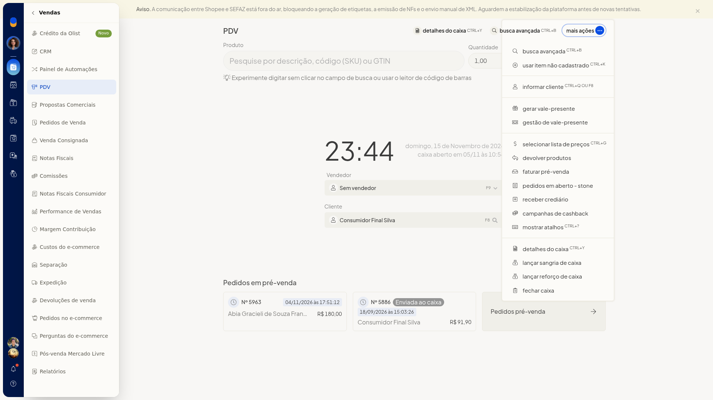
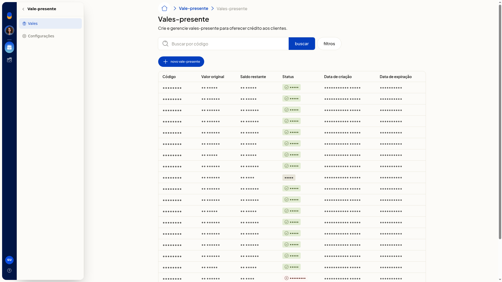
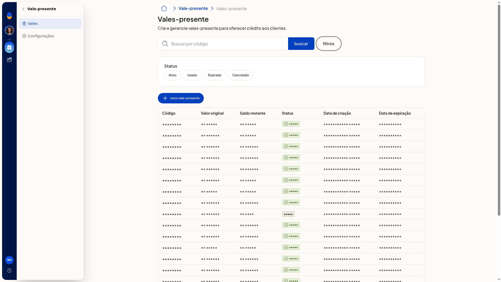
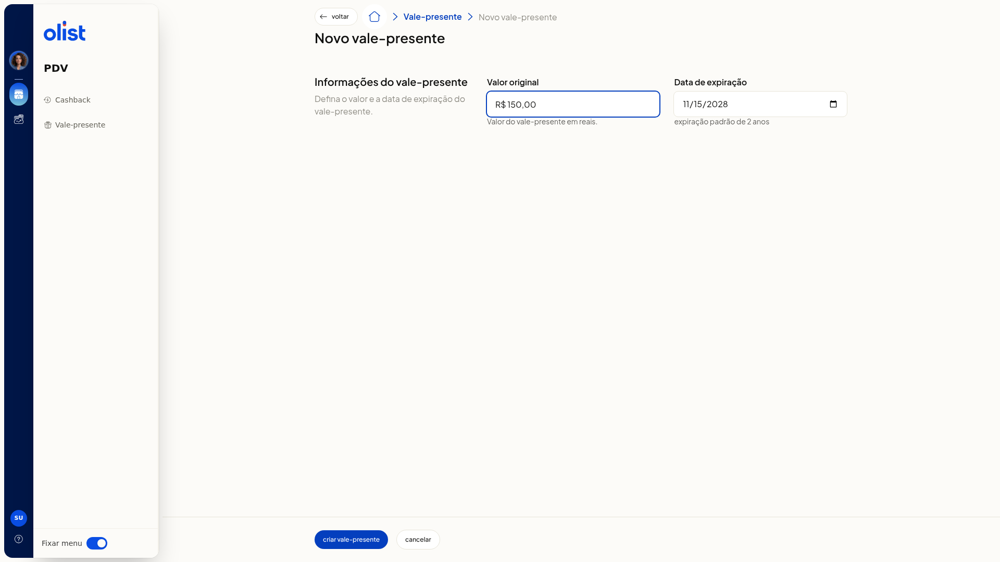
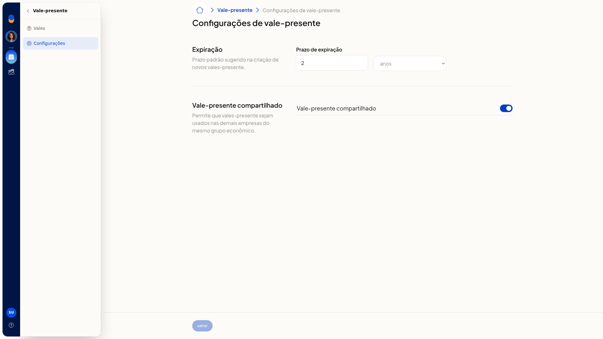
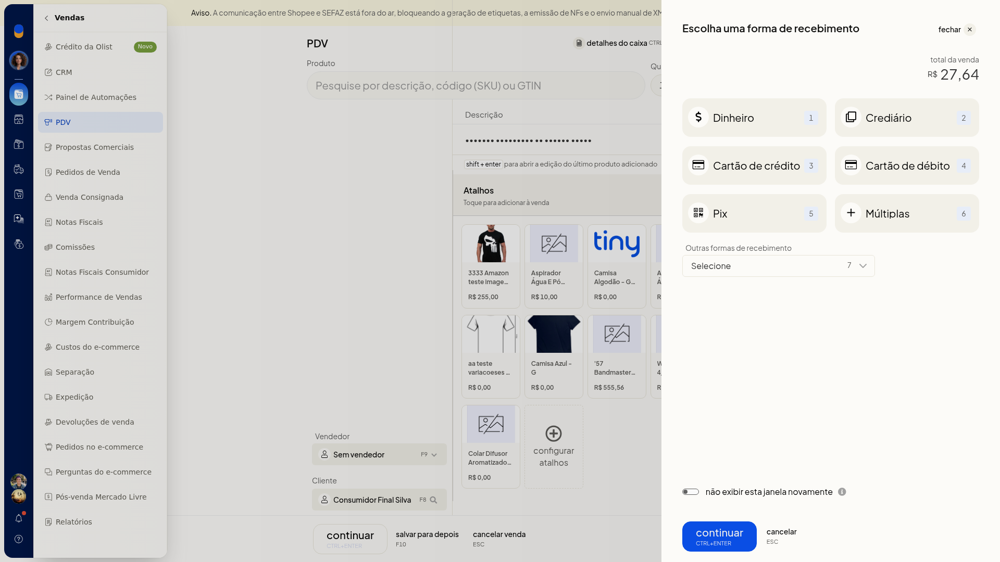

PDV: vale-presente
No PDV da Olist você gera vale-presente, consulta o saldo e a validade e usa o vale como forma de recebimento da venda.
As opções ficam em Mais ações, na tela inicial do PDV.
Pré-requisitos
- Gerar vale-presente e Gestão de vale-presente só aparecem quando a empresa tem o módulo de vale-presente.
Importante
- A ajuda do novo vale indica prazo padrão de 2 anos.
- Na configuração, o prazo usa as unidades dias, meses ou anos.
- Vale-presente também aparece em Outras, na janela de recebimento da venda.
Instruções
Consultar e filtrar vales
-
Acesse Vendas > PDV.
-
Clique em Mais ações.

-
Clique em Gestão de vale-presente.
-
Busque pelo código ou aplique os filtros de status.


A lista mostra Código, Valor original, Saldo restante, Status, Data de criação e Data de expiração. Os status vistos são Ativo, Usado e Cancelado. Os filtros incluem Ativo, Usado, Expirado e Cancelado.
Gerar um vale-presente
-
Em Mais ações, clique em Gerar vale-presente. Na gestão, use novo vale-presente.
-
Informe o valor. O campo não é obrigatório e aceita valor em reais.
-
Informe a expiração. O campo não é obrigatório e aceita data. A ajuda indica prazo padrão de 2 anos.
-
Clique em criar vale-presente. Para sair sem gerar, use voltar ou cancelar.

Ajustar o prazo padrão
-
Abra a configuração do vale-presente.
-
Informe o prazo em número e escolha a unidade: dias, meses ou anos.
-
Deixe o vale compartilhado ligado ou desligado, conforme a regra da loja.
-
Clique em salvar para gravar. Se não quiser alterar, saia sem salvar.

Receber com vale-presente
-
Na venda, abra a janela de recebimento.
-
Em Outras, selecione Vale-presente.
-
Conclua o recebimento com essa forma.

Resultado
Na gestão, você encontra cada vale pelo código, com valor original, saldo restante, status e datas de criação e de expiração. No novo vale, valor e expiração ficam prontos para criar vale-presente. Na configuração, o prazo padrão fica em 2 anos, com unidade em dias, meses ou anos.
Informações adicionais
O prazo padrão é de 2 anos
A ajuda do novo vale indica prazo padrão de 2 anos. Na configuração, o prazo visto estava em 2 anos, com unidade dias, meses ou anos.
O vale compartilhado pode ficar ligado
Na configuração, o vale compartilhado pode permanecer ligado.
A lista separa vales ativos, usados e cancelados
Os status da lista são Ativo, Usado e Cancelado. O filtro também inclui Expirado.